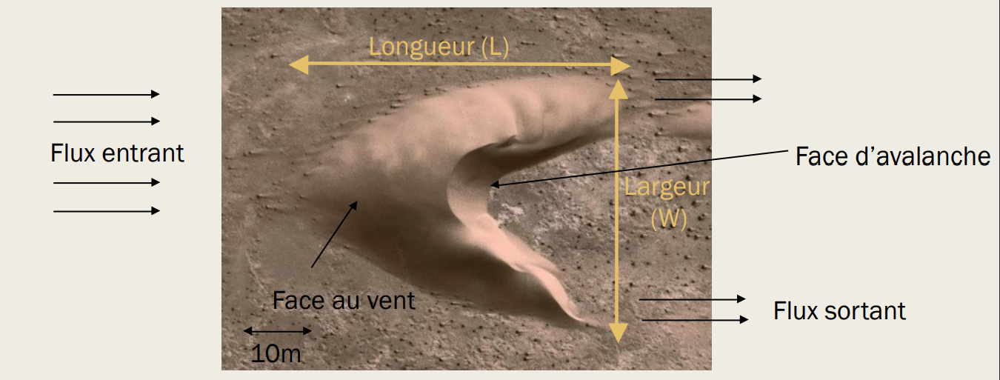
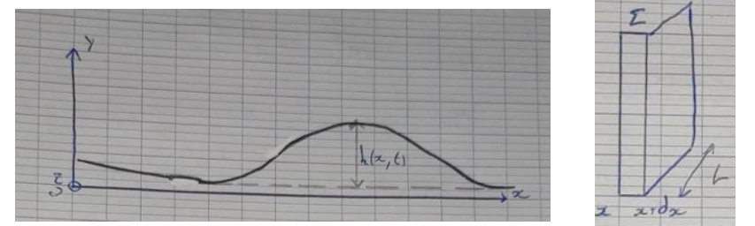
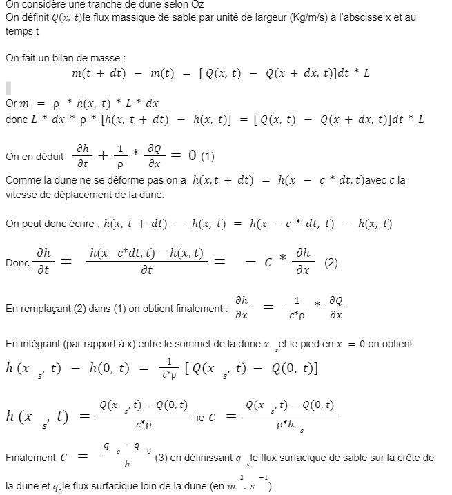

Nous avons décidé d’étudier la dune barkhane, comme l’ont fait de nombreux cherchers car ce sont des dunes faciles à appréhender. Les barkhanes se forment sous un vent unidirectionnel, c'est -à -dire, dans des zones où le vent souffle en moyenne dans la même direction au cours de l’année comme dans le désert du Sahara par exemple, ce qui leur confère une forme en croissant très symétrique. A l’avant, l’on retrouve la face au vent très inclinée, à l’arrière, la face d’avalanche est plus pentue ponctuée par deux cornes. (L’écoulement turbulent en arrière de la dune entraîne la formation d’une bulle de recirculation qui permet l'apparition de cette forme caractéristique (décollement de la couche limite (à cause d’un rapport d’aspect trop important, l’inertie des lignes de courant les empêche “d’épouser” le relief). Pour les dunes barkhanes, ont peut définir longueur, entre l’avant et le bout des cornes, et une largeur entre les deux cornes. On observe en particulier que les dimensions de la barkhane sont proportionnelles entre elles, les mesures expérimentales montrent que longeur/largeur = 1 et hauteur/largeur = 0.1
Pour pouvoir efficacement lutter contre l’ensablement, il nous faut prêter une attention particulière au déplacement des dunes barkhanes et de comprendre leur dynamique.Le déplacement de la dune est permis par l'accélération du vent qui se charge en sable sur la face au vent qui ensuite dépose le sable sur la face d’avalanche.En supposant que la dune ne se déforme pas, on obtient par conservation de la masse et en sachant que les trois dimensions de la dune sont reliées la formule suivante : c =q'/(m^1/3)
Démo de la formule
 On observe expérimentalement qu’aucune barkhane ne fait moins d’1m. Cette taille minimale met en évidence l’existence d’une longueur caractéristique qui régit la physique de la dune. Lorsque le vent arrive sur la dune, il se charge en sable, or il y a un retard entre le flux de sable réel et le flux saturé.(“le vent se charge en sable, il ralentit, des grains tombent → équilibre”) On peut alors définir Lsat, la longueur de saturation du flux. On observe expérimentalement que Lsat est aussi la taille minimale de la dune. Un raisonnement en ordre de grandeur nous donne lsat proportionnel à ldrag = (masse volumique grain / masse volumique fluide)*densite du grain (lsat = 10ldrag environ d’où lsat = 7.5m)
Retour Sommaire Vers prochaine page